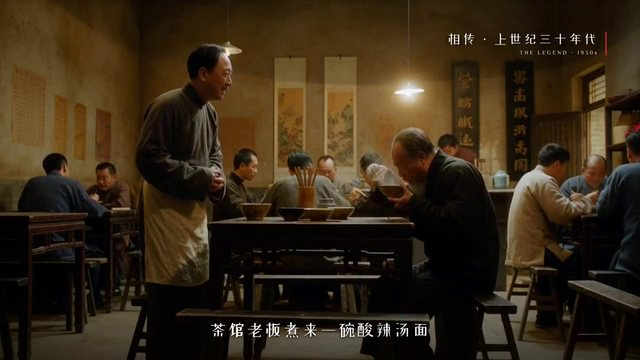
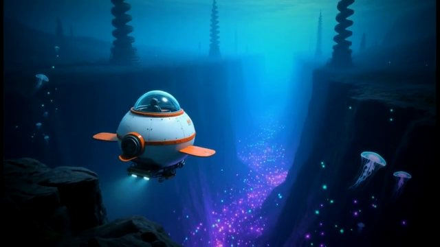
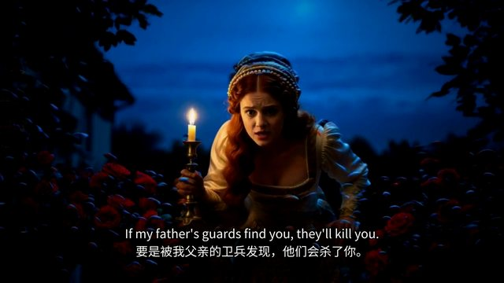
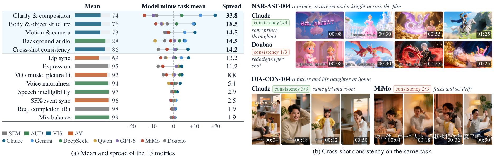
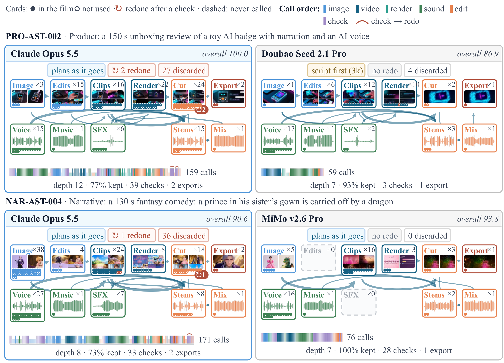

Narrative
20 tasksLong-range storytelling & character continuity
Mean 82.8Top: Claude 95.3
Video generators render short clips. Complete films demand a director — planning scenes, generating visuals and sound, inspecting defects, trimming, mixing, and revising across 33 atomic tools with zero workflow templates.
From a 2-sentence prompt with zero templates, 162 autonomous tool calls ignite across 6 modalities — 107 reach the final 153s film while 55 checks and discarded takes sculpt quality.
The Benchmark & Studio Sandbox
StudioBench moves beyond isolated clip scoring and fixed-template pipelines. Every task specifies a production brief, duration window (60–180s), and aspect ratio across five task types — Open Brief, Constraint, Asset-conditioned, Reference-conditioned, and Audio-led.
Long-range storytelling & character continuity

Advertisements under strict brand & pacing constraints
Faithful product specs, overlays & 41% code rendering

Explaining knowledge clearly with structured visuals

Music as the timeline, beat cutting & choreography

Organizing cultural facts, narration & archival pace

Online-native visual essays & atmospheric CG worlds

Multi-turn character speech & tight lip synchronization

Interactive Tool Deck · 8 Groups
Every model directs through the exact same MCP server and fixed MiniMax-H3 video generator, with a budget of 200 tool calls and 4–8 wall-clock hours per film.
All video generation routes through one fixed backend (MiniMax-H3, 5s or 8s segments with native audio) so remaining variance reflects directing skill rather than generator swapping.
6 modality-separated VLM judge calls answer 73 time-stamped defect checks + 1,686 brief requirements + FFmpeg audio/frame probes.
File read/write edges reconstruct exact tool dependencies to diagnose why films succeed or fail — never entering the score.
160 tasks are sampled from 1,275 screened public AIGC works (20 per genre). Each brief is split into atomic, exact-quote requirements (median 10 items, 545 critical) never shown to the director model.

StudioBench uniquely evaluates general MLLMs on minute-scale audiovisual creation with atomic tools and zero workflow prior.
| Work | Evaluates | Length | Production Interface | Audio | Workflow Prior |
|---|---|---|---|---|---|
| VBench | Generator | ~2 s | Generator | None | — |
| VBench-2.0 | Generator | 5–10 s* | Generator | None | — |
| LongAV-Compass | Generator | 1–2 min | Generator | Generated audio | — |
| VideoGen-Agent | Agent | ≤15 s | Generator | None | Fixed template |
| VideoWeaver | Agent | ~1 min | Generator + Skills | Speech only | Fixed skills |
| VibeVideoBench | Agent | 8 s–15 min | Code rendering | Speech + code synth | None |
| StudioBench (Ours) | Agent | 1–3 min | Generator + Code + 33 Atomic Tools | Speech / Music / SFX | None (emergent) |
RQ1 · Product Quality & Cost
Across 1,120 runs (7 MLLMs × 160 tasks, 1,063 delivered films), four performance tiers emerge. Claude Opus 5.5 (92.2) and Gemini 4 Argon (92.0) lead statistically tied at the top, while Gemini and Doubao define strong cost–quality operating points.
Switch dimensions to inspect where models converge and diverge. Hover any row to highlight it on the Pareto curve.
Genre-weighted overall score (0–100) averaged across all 160 tasks; undelivered runs score 0.
Higher expenditure does not yield proportional gains: Gemini reaches 92.0 at $2.86 vs. Claude's 92.2 at $8.80; Doubao scores 86.9 at $0.75.
81% of delivered films satisfy every single checklist requirement, and mix balance averages 99. The real separation lies in five craft metrics — led by Clarity & Composition (33.8 pt spread), Object Structure (18.5 pt), Motion (14.5 pt), Background Audio (14.5 pt), and Cross-Shot Consistency (14.2 pt).

Claude Opus 5.5 leads Narrative, Commercial, Creator, and Dialogue; Gemini 4 Argon leads Product, Education, and Documentary; DeepSeek & GPT-6 tie in Music.
| Slice | n | Claude | Gemini | DeepSeek | Qwen | GPT-6 | MiMo | Doubao | All |
|---|---|---|---|---|---|---|---|---|---|
| By Genre (20 tasks each) | |||||||||
| Narrative | 20 | 95.3 | 90.7 | 91.1 | 80.5 | 83.8 | 57.1 | 81.0 | 82.8 |
| Commercial | 20 | 92.6 | 91.6 | 88.4 | 82.8 | 86.2 | 56.1 | 90.7 | 84.1 |
| Product | 20 | 86.8 | 97.8 | 95.5 | 91.3 | 93.3 | 62.2 | 88.6 | 88.0 |
| Education | 20 | 90.2 | 94.7 | 87.7 | 85.2 | 93.1 | 64.8 | 88.3 | 86.3 |
| Music | 20 | 87.0 | 85.4 | 88.6 | 81.7 | 88.6 | 61.1 | 82.0 | 82.1 |
| Documentary | 20 | 93.5 | 93.6 | 88.0 | 84.4 | 90.8 | 79.9 | 92.7 | 89.0 |
| Creator | 20 | 96.6 | 93.2 | 86.8 | 84.1 | 84.6 | 73.5 | 88.3 | 86.7 |
| Dialogue | 20 | 95.8 | 89.0 | 80.7 | 81.3 | 89.6 | 52.1 | 83.3 | 81.7 |
| By Task Type | |||||||||
| Open Brief | 32 | 95.2 | 93.6 | 91.0 | 85.2 | 92.1 | 69.2 | 89.1 | 87.9 |
| Constraint | 59 | 89.8 | 91.0 | 86.4 | 85.3 | 87.6 | 59.0 | 85.5 | 83.5 |
| Asset-cond. | 34 | 92.7 | 94.4 | 90.4 | 84.2 | 91.2 | 61.7 | 86.7 | 85.9 |
| Reference-cond. | 15 | 94.9 | 89.1 | 87.5 | 85.3 | 77.4 | 56.3 | 84.0 | 82.1 |
| Audio-led | 20 | 91.8 | 90.6 | 86.9 | 76.3 | 91.3 | 74.7 | 89.8 | 85.9 |
| By Required Sound (multi-label) | |||||||||
| Speech | 89 | 94.3 | 93.2 | 89.8 | 83.7 | 89.7 | 65.1 | 88.4 | 86.3 |
| Dialogue | 55 | 94.4 | 89.2 | 86.6 | 82.5 | 85.2 | 60.0 | 83.1 | 83.0 |
| Music | 157 | 92.2 | 92.0 | 88.7 | 84.0 | 88.7 | 64.0 | 87.3 | 85.3 |
| Sound effects | 128 | 92.1 | 92.0 | 88.5 | 83.4 | 88.0 | 62.9 | 86.4 | 84.8 |
Perfect 21/21 pairwise model agreement between the automated judge and 3 human raters (Pearson r = 0.997).
| Model | Human Raters (Rank) | VLM Judge (Rank) |
|---|---|---|
| Claude Opus 5.5 | 88.0 (1) | 92.8 (1) |
| Gemini 4 Argon | 84.9 (2) | 91.4 (2) |
| GPT-6 Astra | 83.6 (3) | 88.3 (3) |
| DeepSeek V4.1 Flash | 81.8 (4) | 87.6 (4) |
| Doubao Seed 2.1 Pro | 81.3 (5) | 87.2 (5) |
| Qwen3.8 Max | 77.0 (6) | 83.3 (6) |
| MiMo v2.6 Pro | 60.1 (7) | 64.9 (7) |
RQ2 & RQ3 · Emergent Workflows & Capability Bottlenecks
Every tested MLLM spontaneously organizes multi-stage production pipelines (median 121 tool calls, 131 edges, depth 9). Yet finishing a film reliably is not the same as making it good: models recover from 80–90% of explicit tool errors, but fail to notice silent perceptual defects.


Preserving a character's face, wardrobe, and voice timing across sequential image edits, 5–8s video clips, and audio mixes remains fragile across long dependency chains.
In four traced silent films (e.g., MiMo on COM-AUD-001), mix_audio sets gain to zero; subsequent inspect and sample_frames calls confirm file existence and visuals without ever checking audio content.
Simply issuing more tool calls barely improves quality within a model (ρ = +0.13). Across models, discarding weaker takes (retention ρ = −0.64) and building deeper graphs (ρ = +0.75) track quality closely, while 42.1% of films still cut at raw 5s/8s generator lengths.

Top models build deeper, more selective workflows (72%–84% kept) while weaker models retain 93%–95% of every take.
| Model | Nodes | Depth | Used | Min. | Tokens (in / out) |
|---|---|---|---|---|---|
| Claude Opus 5.5 | 160 | 11 | 0.75 | 125 | 6.39M / 149k |
| Gemini 4 Argon | 140 | 9 | 0.84 | 79 | 1.73M / 47k |
| GPT-6 Astra | 127 | 10 | 0.88 | 56 | 0.57M / 16k |
| DeepSeek V4.1 Flash | 150 | 10 | 0.72 | 81 | 4.21M / 82k |
| Doubao Seed 2.1 Pro | 54 | 7 | 0.93 | 47 | 0.58M / 18k |
| Qwen3.8 Max | 97 | 9 | 0.85 | 79 | 1.65M / 47k |
| MiMo v2.6 Pro | 76 | 7 | 0.95 | 66 | 0.51M / 54k |
Rule-based error modes across 1,063 delivered films (Table 3).
| Error mode | Ability | All | Lowest | Highest |
|---|---|---|---|---|
| Character drift | Keeping state | 19.1% | 10.9% Claude | 27.5% Doubao |
| AV misalignment | Keeping state | 32.9% | 28.2% Claude | 37.5% Qwen |
| Silent damage | Verifying outputs | 3.5% | 0.6% Gemini | 5.8% MiMo |
| Tool-length pacing | Deciding by effect | 42.1% | 25.6% Claude | 59.4% Doubao |
Paired loss attribution on 142 tasks / 415 losses (Table 16).
| Category | All pairs | Audible B |
|---|---|---|
| Unverified perceptual defect | 65.5% | 65.3% |
| Tool default over effect | 16.6% | 16.5% |
| Cross-step state drift | 15.4% | 15.7% |
| Unrecovered tool error | 1.4% | 1.5% |
| Misread brief | 1.0% | 1.0% |
| Checked but missed | 57.8% | 57.1% |
| Never checked | 33.5% | 34.4% |
| Noticed, not fixed | 7.2% | 7.2% |
All models cut far slower than human source films (0.21–0.46× human cut rate).
| Model | Silent | Sil. >10s | Black | Frozen | Washed | Cuts / human |
|---|---|---|---|---|---|---|
| Claude Opus 5.5 | 0.0 | 0.6 | 9.6 | 5.8 | 2.6 | 0.46 |
| Gemini 4 Argon | 0.0 | 1.3 | 1.3 | 10.1 | 0.6 | 0.29 |
| DeepSeek V4.1 Flash | 1.9 | 3.2 | 18.6 | 16.7 | 3.3 | 0.46 |
| Qwen3.8 Max | 0.0 | 5.9 | 19.1 | 19.1 | 2.6 | 0.29 |
| GPT-6 Astra | 0.0 | 2.5 | 2.5 | 14.4 | 4.4 | 0.35 |
| MiMo v2.6 Pro | 4.2 | 9.2 | 4.2 | 25.0 | 1.7 | 0.21 |
| Doubao Seed 2.1 Pro | 0.0 | 8.8 | 14.4 | 20.6 | 3.8 | 0.35 |
Side-by-Side Audiovisual Screening Room
Switch across four distinct genres from StudioBench. Each pairing plays 20-second audiovisual excerpts directly from delivered 720p films (playing one automatically pauses the other) so you can compare pacing, consistency, voice, and sound design firsthand.
Fixing MiniMax-H3 isolates agentic directing skill, though future generators with stronger native consistency may shift absolute ceilings.
40 runs ended without calling export (36 by MiMo); 13 hit API or wall-clock limits. Excluding those 13 raises Claude to 94.6 while keeping top tiers stable.
Thresholds were tuned on 27 dev tasks included inside the 116 human-rated tasks; within-task judge–human r is 0.656 vs. rater–rater 0.692.
Asset- and Reference-conditioned tasks state conditions inside the brief without attached input files; audio/visual perception loops remain open work.
Citation
@article{studiobench2026,
title = {{StudioBench: Benchmarking Agentic Multimodal Large Language Models for Productive Audiovisual Creation}},
author = {Anonymous},
year = {2026}
}
Anonymous manuscript under review; author list, affiliations, and public release links are pending.